这里的juc-sync同步器框架，是指java.util.concurrent包下一些辅助同步器类，每个类都有自己适合的使用场景：
| 同步器名称 | 作用 |
|---|---|
| CountDownLatch | 倒数计数器，构造时设定计数值，当计数值归零后，所有阻塞线程恢复执行；其内部实现了AQS框架 |
| CyclicBarrier | 循环栅栏，构造时设定等待线程数，当所有线程都到达栅栏后，栅栏放行；其内部通过ReentrantLock和Condition实现同步 |
| Semaphore | 信号量，类似于“令牌”，用于控制共享资源的访问数量；其内部实现了AQS框架 |
| Exchanger | 交换器，类似于双向栅栏，用于线程之间的配对和数据交换；其内部根据并发情况有“单槽交换”和“多槽交换”之分 |
| Phaser | 多阶段栅栏，相当于CyclicBarrier的升级版，可用于分阶段任务的并发控制执行；其内部比较复杂，支持树形结构，以减少并发带来的竞争 |
一、CountDownLatch
1.1 简介
CountDownLatch是一个辅助同步器类，用来作计数使用，它的作用有点类似于生活中的倒数计数器，先设定一个计数初始值，当计数降到0时，将会触发一些事件，如火箭的倒数计时。
初始计数值在构造CountDownLatch对象时传入，每调用一次 countDown() 方法，计数值就会减1。
线程可以调用CountDownLatch的await方法进入阻塞，当计数值降到0时，所有之前调用await阻塞的线程都会释放。
注意：CountDownLatch的初始计数值一旦降到0，无法重置。如果需要重置，可以考虑使用CyclicBarrier。
1.2 使用示例
ContDownLatch一般有以下几种用法：
1.2.1 作为一个开关/入口
将初始计数值为1的 CountDownLatch 作为一个的开关或入口：
在调用 countDown() 的线程打开入口前，所有调用 await 的线程都一直在入口处等待。
public class Driver {
private static final int N = 10;
public static void main() throws InterruptedException {
CountDownLatch switcher = new CountDownLatch(1);
for (int i = 0; i < N; ++i) {
new Thread(new Worker(switcher)).start();
}
doSomething();
switcher.countDown(); // 主线程开启开关
}
public static void doSomething() {
}
}
class Worker implements Runnable {
private final CountDownLatch startSignal;
Worker(CountDownLatch startSignal) {
this.startSignal = startSignal;
}
public void run() {
try {
startSignal.await(); //所有执行线程在此处等待开关开启
doWork();
} catch (InterruptedException ex) {
}
}
void doWork() { ...}
}1.2.2 作为一个完成信号
将初始计数值为N的 CountDownLatch作为一个完成信号点：使某个线程在其它N个线程完成某项操作之前一直等待。
public class Driver {
private static final int N = 10;
public static void main() throws InterruptedException {
CountDownLatch compsignal = new CountDownLatch(N);
for (int i = 0; i < N; ++i) {
new Thread(new Worker(compsignal)).start();
}
compsignal.await(); // 主线程等待其它N个线程完成
doSomething();
}
public static void doSomething() {
}
}
class Worker implements Runnable {
private final CountDownLatch compSignal;
Worker(CountDownLatch compSignal) {
this.compSignal = compSignal;
}
public void run() {
try {
doWork();
compSignal.countDown(); //每个线程做完自己的事情后，就将计数器减去1
} catch (InterruptedException ex) {
}
}
void doWork() { ...}
}1.3 类/接口声明
类声明：
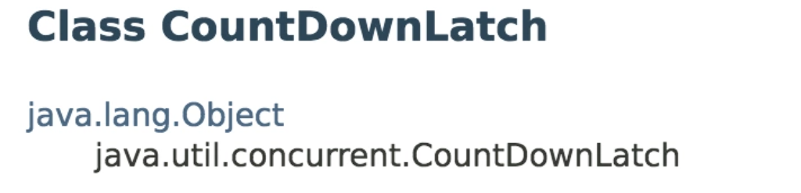
构造器：
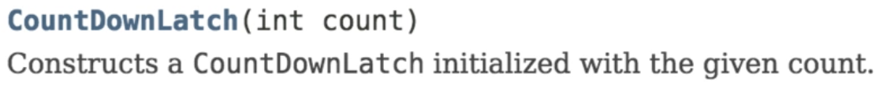
接口：
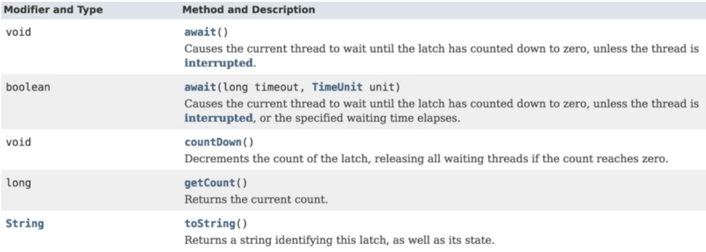
1.4 原理
它的底层是使用的AQS,细节原理可见之前博文—>J.U.C_locks框架：AQS共享功能
二、CyclicBarrier
2.1 简介
CyclicBarrier是一个辅助同步器类，在JDK1.5时随着J.U.C一起引入。
这个类的功能和我们之前介绍的CountDownLatch有些类似。我们知道，CountDownLatch是一个倒数计数器，在计数器不为0时，所有调用await的线程都会等待，当计数器降为0，线程才会继续执行，且计数器一旦变为0，就不能再重置了。
CyclicBarrier可以认为是一个栅栏，栅栏的作用是什么？就是阻挡前行。
顾名思义，CyclicBarrier是一个可以循环使用的栅栏，它做的事情就是：
让线程到达栅栏时被阻塞(调用await方法)，直到到达栅栏的线程数满足指定数量要求时，栅栏才会打开放行。
这其实有点像军训报数，报数总人数满足教官认为的总数时，教官才会安排后面的训练。
可以看下面这个图来理解下:
一共4个线程A、B、C、D，它们到达栅栏的顺序可能各不相同。当A、B、C到达栅栏后，由于没有满足总数【4】的要求，所以会一直等待，当线程D到达后，栅栏才会放行。
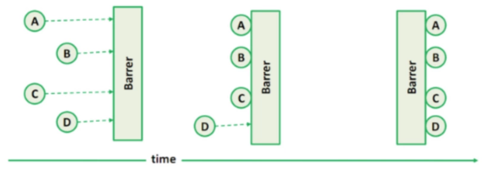
从CyclicBarrier的构造器，我们也可以看出关于这个类的一些端倪，CyclicBarrier有两个构造器：
构造器一：
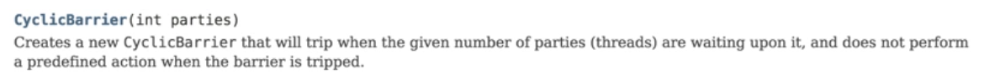
这个构造器的参数parties就是之前说的需要满足的计数总数。
构造器二：
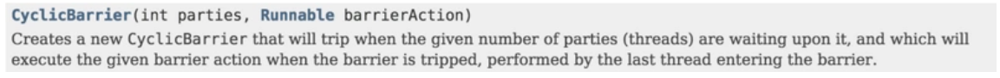
这个构造器稍微特殊一些，除了指定了计数总数外，传入了一个Runnable任务。
Runnable任务其实就是当最后一个线程到达栅栏时，后续立即要执行的任务。
比如，军训报数完毕后，总人数满足了要求，教官就会开始命令大家执行下一个任务，这个【下一个任务】就是这里的Runnable。
2.2 示例
我们来看一个CyclicBarrier的示例，来理解下它的功能。
假设现在有这样一个场景：
5个运动员准备跑步比赛，运动员在赛跑前会准备一段时间，当裁判发现所有运动员准备完毕后，就举起发令枪，比赛开始。
这里的起跑线就是屏障，运动员必须在起跑线等待其他运动员准备完毕。
public class CyclicBarrierTest {
public static void main(String[] args) {
int N = 5; // 运动员数
CyclicBarrier cb = new CyclicBarrier(N, new Runnable() {
@Override
public void run() {
System.out.println("**** 所有运动员已准备完毕，发令枪：跑！****");
}
});
for (int i = 0; i < N; i++) {
Thread t = new Thread(new PrepareWork(cb), "运动员[" + i + "]");
t.start();
}
}
private static class PrepareWork implements Runnable {
private CyclicBarrier cb;
PrepareWork(CyclicBarrier cb) {
this.cb = cb;
}
@Override
public void run() {
try {
Thread.sleep(500);
System.out.println(Thread.currentThread().getName() + ": 准备完成");
cb.await(); // 在栅栏等待
} catch (InterruptedException e) {
e.printStackTrace();
} catch (BrokenBarrierException e) {
e.printStackTrace();
}
}
}
}执行上面的程序，可能的输出结果如下：
运动员[3]: 准备完成
运动员[1]: 准备完成
运动员[0]: 准备完成
运动员[2]: 准备完成
运动员[4]: 准备完成
**** 所有运动员已准备完毕，发令枪：跑！****从输出可以看到，线程到达栅栏时会被阻塞(调用await方法)，直到到达栅栏的线程数满足指定数量要求时，栅栏才会打开放行。
2.3 对异常的处理
我们知道，线程在阻塞过程中，可能被中断，那么既然CyclicBarrier放行的条件是等待的线程数达到指定数目，万一线程被中断导致最终的等待线程数达不到栅栏的要求怎么办？
CyclicBarrier一定有考虑到这种异常情况，不然其它所有等待线程都会无限制地等待下去。
那么CyclicBarrier是如何处理的呢？
我们看下CyclicBarrier的await()方法：
public int await() throws InterruptedException, BrokenBarrierException {
//...
}可以看到，这个方法除了抛出InterruptedException异常外，还会抛出BrokenBarrierException。
BrokenBarrierException表示当前的CyclicBarrier已经损坏了，可能等不到所有线程都到达栅栏了，所以已经在等待的线程也没必要再等了，可以散伙了。
出现以下几种情况之一时，当前等待线程会抛出BrokenBarrierException异常：
- 其它某个正在await等待的线程被中断了
- 其它某个正在await等待的线程超时了
- 某个线程重置了CyclicBarrier(调用了reset方法，后面会讲到)
另外，只要正在Barrier上等待的任一线程抛出了异常，那么Barrier就会认为肯定是凑不齐所有线程了，就会将栅栏置为损坏（Broken）状态，并传播BrokenBarrierException给其它所有正在等待（await）的线程。
我们来对上面的例子做个改造，模拟下异常情况：
public class CyclicBarrierTest {
public static void main(String[] args) throws InterruptedException {
int N = 5; // 运动员数
CyclicBarrier cb = new CyclicBarrier(N, new Runnable() {
@Override
public void run() {
System.out.println("**** 所有运动员已准备完毕，发令枪：跑！****");
}
});
List<Thread> list = new ArrayList<>();
for (int i = 0; i < N; i++) {
Thread t = new Thread(new PrepareWork(cb), "运动员[" + i + "]");
list.add(t);
t.start();
if (i == 3) {
t.interrupt(); // 运动员[3]置中断标志位
}
}
Thread.sleep(2000);
System.out.println("Barrier是否损坏：" + cb.isBroken());
}
private static class PrepareWork implements Runnable {
private CyclicBarrier cb;
PrepareWork(CyclicBarrier cb) {
this.cb = cb;
}
@Override
public void run() {
try {
System.out.println(Thread.currentThread().getName() + ": 准备完成");
cb.await();
} catch (InterruptedException e) {
System.out.println(Thread.currentThread().getName() + ": 被中断");
} catch (BrokenBarrierException e) {
System.out.println(Thread.currentThread().getName() + ": 抛出BrokenBarrierException");
}
}
}
}可能的输出结果：
运动员[0]: 准备完成
运动员[2]: 准备完成
运动员[1]: 准备完成
运动员[3]: 准备完成
运动员[3]: 被中断
运动员[4]: 准备完成
运动员[4]: 抛出BrokenBarrierException
运动员[0]: 抛出BrokenBarrierException
运动员[1]: 抛出BrokenBarrierException
运动员[2]: 抛出BrokenBarrierException
Barrier是否损坏：true这段代码，模拟了中断线程3的情况，从输出可以看到，线程0、1、2首先到达Brrier等待。
然后线程3到达，由于之前设置了中断标志位，所以线程3抛出中断异常，导致Barrier损坏，此时所有已经在栅栏等待的线程（0、1、2）都会抛出BrokenBarrierException异常。
此时，即使再有其它线程到达栅栏（线程4），都会抛出BrokenBarrierException异常。
注意：使用
CyclicBarrier时，对异常的处理一定要小心，比如线程在到达栅栏前就抛出异常，此时如果没有重试机制，其它已经到达栅栏的线程会一直等待（因为没有还没有满足总数），最终导致程序无法继续向下执行。
2.4 原理
2.4.1 构造
CyclicBarrier有两个构造器：CyclicBarrier cb = new CyclicBarrier(10);
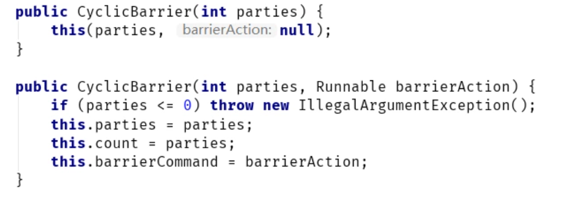
构造器内部的各个字段含义如下：
| 字段名 | 作用 |
|---|---|
| parties | 栅栏开启需要的到达线程总数 |
| count | 剩余未到达的线程总数 |
| barrierCommand | 最后一个线程到达后执行的任务 |
2.4.2 内部结构
CyclicBarrier 并没有自己去实现AQS框架的API，而是利用了ReentrantLock和Condition。
public class CyclicBarrier {
private final ReentrantLock lock = new ReentrantLock();
private final Condition trip = lock.newCondition();
// 栅栏开启需要的到达线程总数
private final int parties;
// 最后一个线程到达后执行的任务
private final Runnable barrierCommand;
// 剩余未到达的线程总数
private int count;
// 当前轮次的运行状态
private Generation generation = new Generation();
// ...
}需要注意的是generation这个字段：
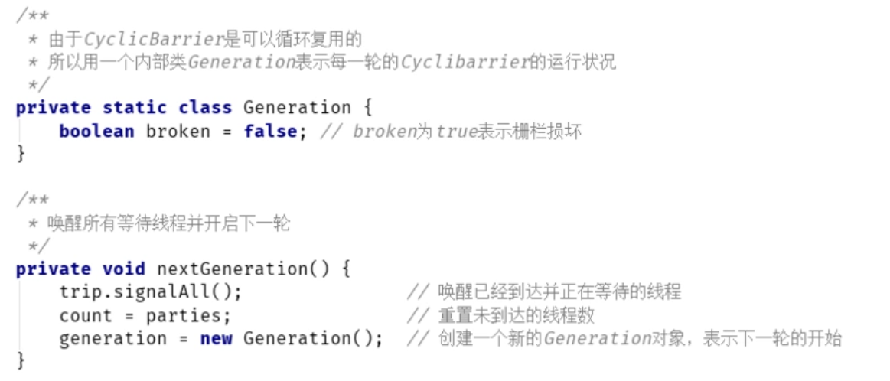
我们知道，CyclicBarrier 是可以循环复用的，所以CyclicBarrier 的每一轮任务都需要对应一个generation 对象。
generation 对象内部有个broken字段，用来标识当前轮次的CyclicBarrier 是否已经损坏。
nextGeneration方法用来创建一个新的generation 对象，并唤醒所有等待线程，重置内部参数。
2.4.3 核心方法
我们先来看下await方法：
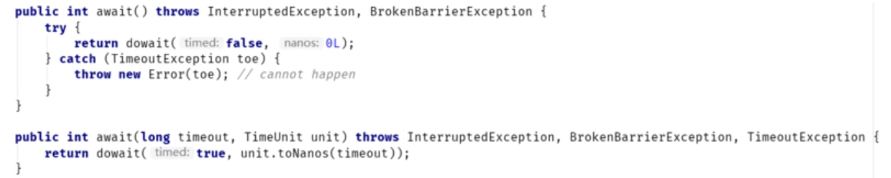
可以看到，无论有没有超时功能，内部都是调了dowait这个方法：
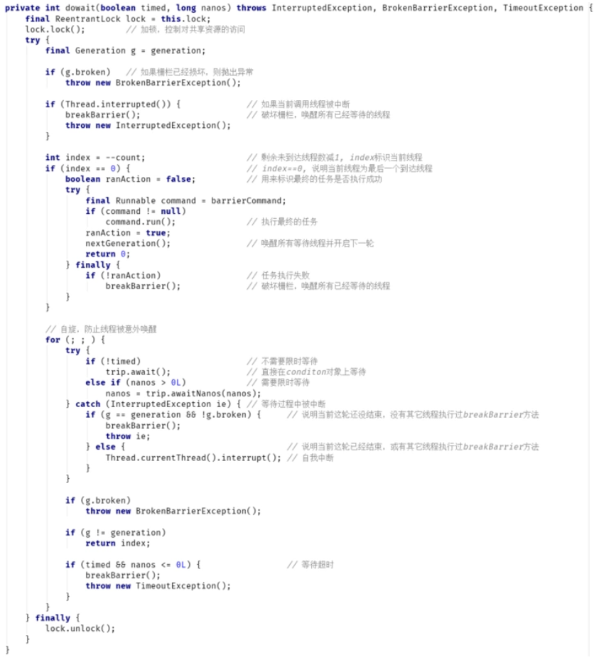
dowait方法并不复杂，一共有3部分：
- 判断栅栏是否已经损坏或当前线程已经被中断，如果是会分别抛出异常；
- 如果当前线程是最后一个到达的线程，会尝试执行最终任务（如果构造CyclicBarrier对象时有传入Runnable的话），执行成功即返回，失败会破坏栅栏；
- 对于不是最后一个到达的线程，会在Condition队列上等待，为了防止被意外唤醒，这里用了一个自旋操作。
破坏栅栏用的是breakBarrier方法：
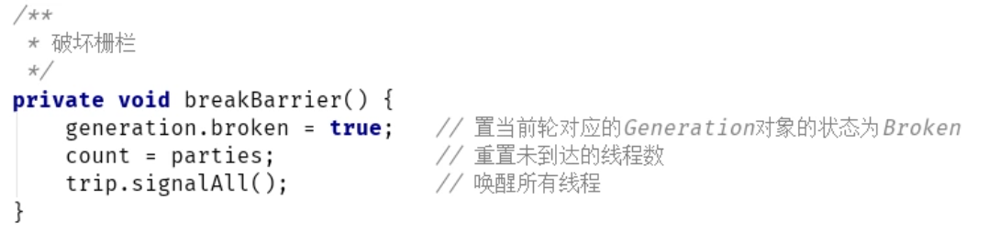
再来看下CyclicBarrier的reset方法：
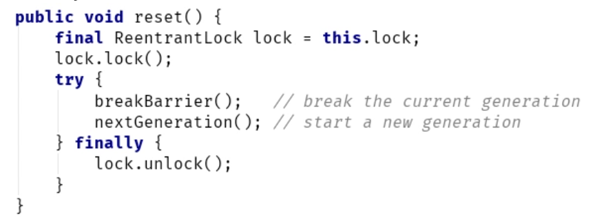
该方法先破坏栅栏，然后开始下一轮（新建一个generation对象）。
2.5 接口/类声明
类声明：
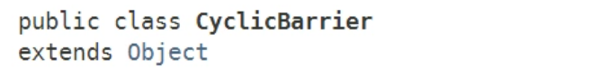
构造器声明：
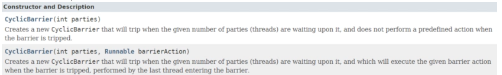
接口声明：
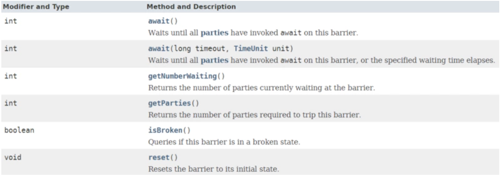
三、Semaphore
3.1 简介
Semaphore，又名信号量，这个类的作用有点类似于“许可证”。有时，我们因为一些原因需要控制同时访问共享资源的最大线程数量，比如出于系统性能的考虑需要限流，或者共享资源是稀缺资源，我们需要有一种办法能够协调各个线程，以保证合理的使用公共资源。
Semaphore维护了一个许可集，其实就是一定数量的“许可证”。
当有线程想要访问共享资源时，需要先获取(acquire)的许可；如果许可不够了，线程需要一直等待，直到许可可用。当线程使用完共享资源后，可以归还(release)许可，以供其它需要的线程使用。
另外，Semaphore支持公平/非公平策略，这和ReentrantLock类似，后面讲Semaphore原理时会看到，它们的实现本身就是类似的。
3.2 示例
我们来看下Oracle官方给出的示例：
class Pool {
private static final int MAX_AVAILABLE = 100; // 可同时访问资源的最大线程数
private final Semaphore available = new Semaphore(MAX_AVAILABLE, true);
protected Object[] items = new Object[MAX_AVAILABLE]; //共享资源
protected boolean[] used = new boolean[MAX_AVAILABLE];
public Object getItem() throws InterruptedException {
available.acquire();
return getNextAvailableItem();
}
public void putItem(Object x) {
if (markAsUnused(x))
available.release();
}
private synchronized Object getNextAvailableItem() {
for (int i = 0; i < MAX_AVAILABLE; ++i) {
if (!used[i]) {
used[i] = true;
return items[i];
}
}
return null;
}
private synchronized boolean markAsUnused(Object item) {
for (int i = 0; i < MAX_AVAILABLE; ++i) {
if (item == items[i]) {
if (used[i]) {
used[i] = false;
return true;
} else
return false;
}
}
return false;
}
}items数组可以看成是我们的共享资源，当有线程尝试使用共享资源时，我们要求线程先获得“许可”（调用Semaphore 的acquire方法），这样线程就拥有了权限，否则就需要等待。当使用完资源后，线程需要调用Semaphore 的release方法释放许可。
注意：上述示例中，对于共享资源访问需要由锁来控制，Semaphore仅仅是保证了线程由权限使用共享资源，至于使用过程中是否由并发问题，需要通过锁来保证。
总结一下，许可数 ≤ 0代表共享资源不可用。许可数 ＞ 0，代表共享资源可用，且多个线程可以同时访问共享资源。
这是不是和CountDownLatch有点像？
我们来比较下：
| 同步器 | 作用 |
|---|---|
| CountDownLatch | 同步状态State > 0表示资源不可用，所有线程需要等待；State == 0表示资源可用，所有线程可以同时访问 |
| Semaphore | 剩余许可数 < 0表示资源不可用，所有线程需要等待； 许可剩余数 ≥ 0表示资源可用，所有线程可以同时访问 |
如果读者阅读过本系列的AQS相关文章，应该立马可以反应过来，这其实就是对同步状态的定义不同。
CountDownLatch内部实现了AQS的共享功能，那么Semaphore是否也一样是利用内部类实现了AQS的共享功能呢？
3.3 原理
3.3.1 内部结构
我们先来看下Semaphore的内部：
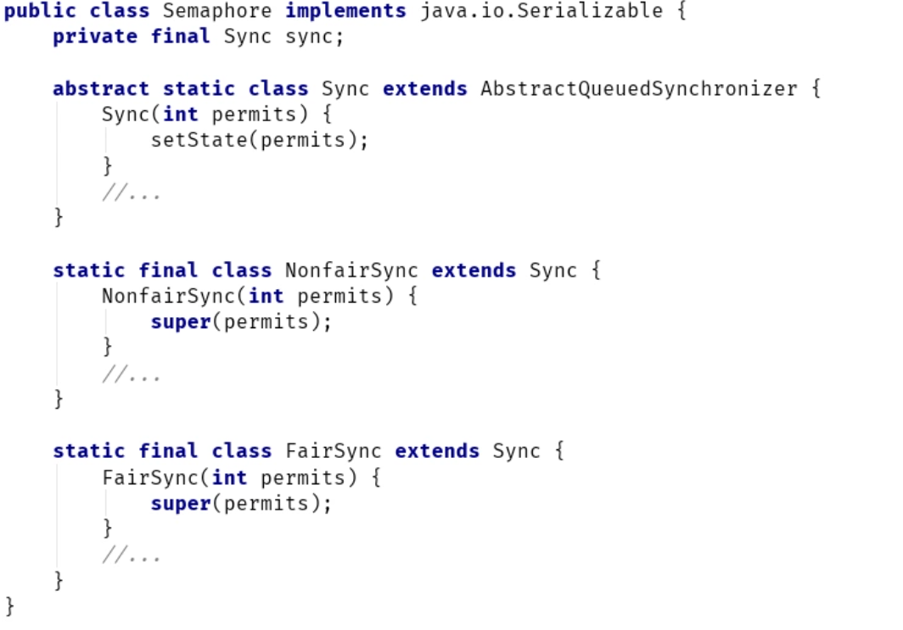
可以看到，Semaphore果然是通过内部类实现了AQS框架提供的接口，而且基本结构几乎和ReentrantLock完全一样，通过内部类分别实现了公平/非公平策略。
3.3.2 对象的构造
Semaphore sm = new Semaphore (3, true);Semaphore有两个构造器：
构造器1：
构造器2：
构造时需要指定“许可”的数量——permits，内部结构如下：
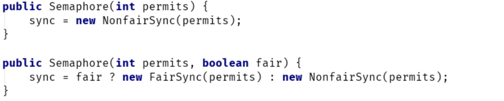
3.4 公平策略分析
我们还是通过示例来分析：
假设现在一共3个线程：ThreadA、ThreadB、ThreadC。一个许可数为2的公平策略的Semaphore。线程的调用顺序如下：
Semaphore sm = new Semaphore (2, true);
// ThreadA: sm.acquire()
// ThreadB: sm.acquire(2)
// ThreadC: sm.acquire()
// ThreadA: sm.release()
// ThreadB: sm.release(2)3.4.1 创建公平策略的Semaphore对象
Semaphore sm = new Semaphore (2, true);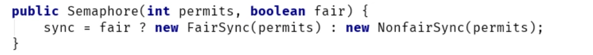
可以看到，内部创建了一个FairSync对象，并传入许可数permits：
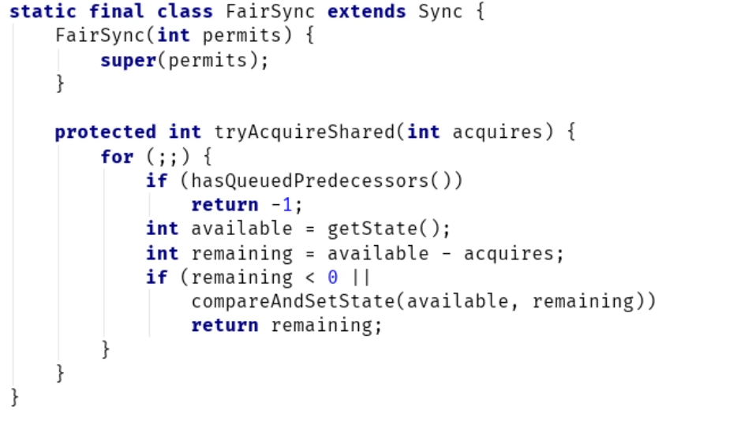
Sync是Semaphore的一个内部抽象类，公平策略的FairSync和非公平策略的NonFairSync都继承该类。
可以看到，构造器传入的permits值就是同步状态的值，这也体现了我们在AQS系列中说过的：
AQS框架的设计思想就是分离构建同步器时的一系列关注点，它的所有操作都围绕着资源——同步状态（synchronization state）来展开，并将资源的定义和访问留给用户解决：
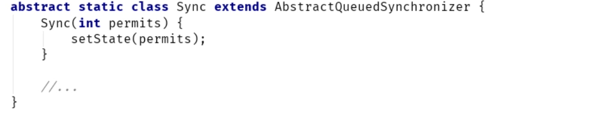
3.4.2 ThreadA调用acqure方法
Semaphore的acquire方法内部调用了AQS的方法，入参”1”表示尝试获取1个许可：
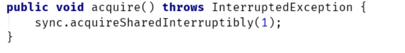
AQS的acquireSharedInterruptibly方式是共享功能的一部分，我们在AQS系列中就已经对它很熟悉了：
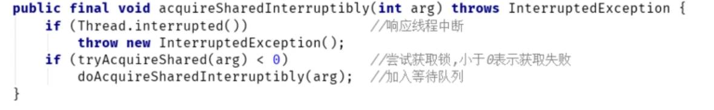
关键来看下Semaphore是如何实现tryAcquireShared方法的：
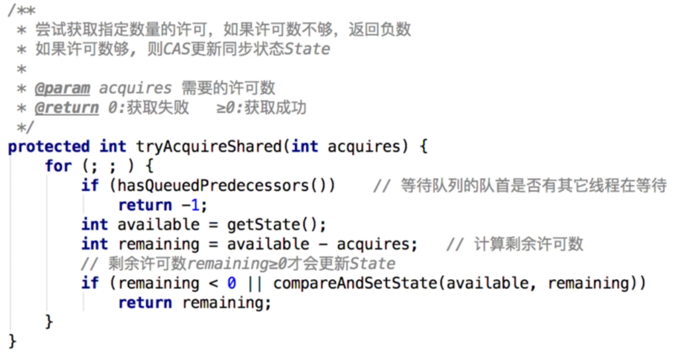
对于Semaphore来说，线程是可以一次性尝试获取多个许可的，此时只要剩余的许可数量够，最终会通过自旋操作更新成功。如果剩余许可数量不够，会返回一个负数，表示获取失败。
显然，ThreadA获取许可成功。此时，同步状态值State == 1，等待队列的结构如下：
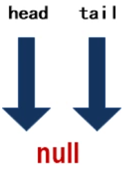
3.4.3 ThreadB调用acqure(2)方法
带入参的aquire方法内部和无参的一样，都是调用了AQS的acquireSharedInterruptibly方法：
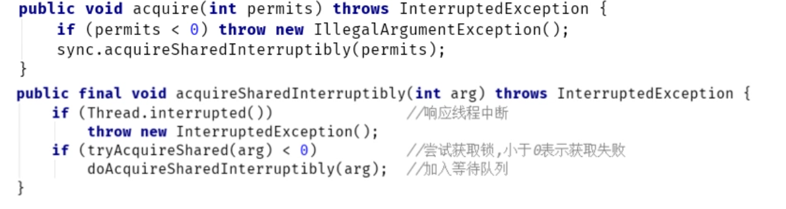
此时，ThreadB一样进入tryAcquireShared方法。不同的是，此时剩余许可数不足，因为ThreadB一次性获取2个许可，tryAcquireShared方法返回一个负数，表示获取失败：remaining = available - acquires = 1- 2 = -1;
ThreadB会调用doAcquireSharedInterruptibly方法：
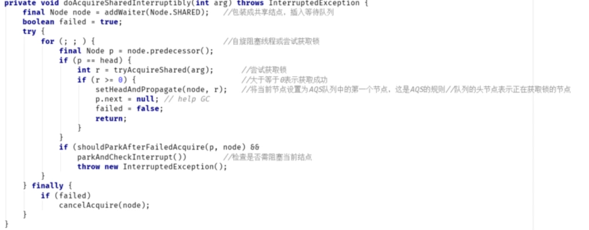
上述方法首先通过addWaiter方法将ThreadB包装成一个共享结点，加入等待队列：
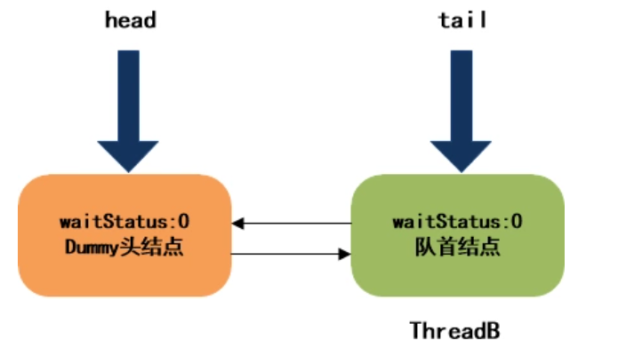然后会进入自旋操作，先尝试获取一次资源，显然此时是获取失败的，然后判断是否要进入阻塞（shouldParkAfterFailedAcquire）：
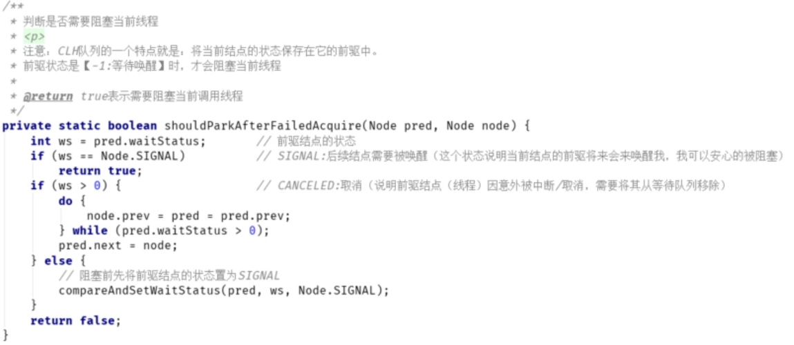
上述方法会先将前驱结点的状态置为SIGNAL，表示ThreadB需要阻塞，但在阻塞之前需要将前驱置为SIGNAL，以便将来可以唤醒ThreadB。
最终ThreadB会在parkAndCheckInterrupt中进入阻塞：
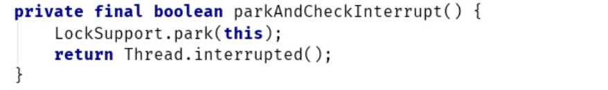
此时，同步状态值依然是State == 1，等待队列的结构如下：
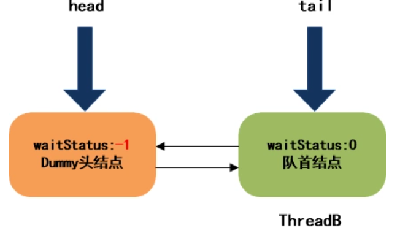
3.4.4 ThreadC调用acqure()方法
流程和步骤3完全相同，ThreadC被包装成结点加入等待队列后：
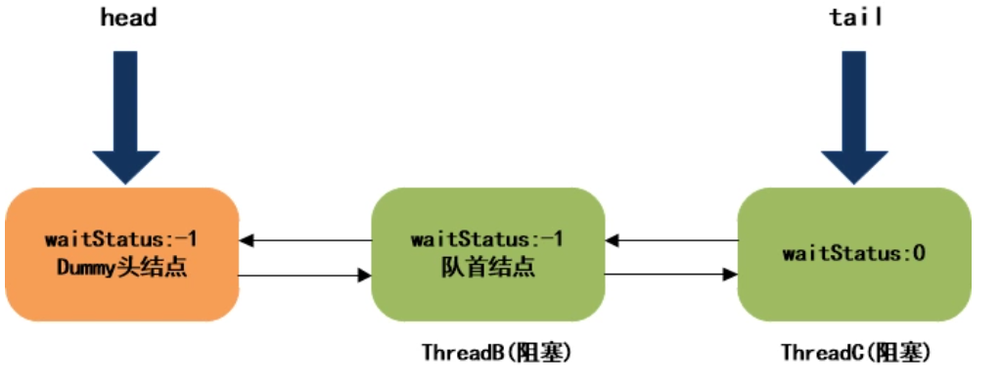
同步状态：State == 1
3.4.5 ThreadA调用release()方法
Semaphore的realse方法调用了AQS的releaseShared方法，默认入参为”1”，表示归还一个许可：
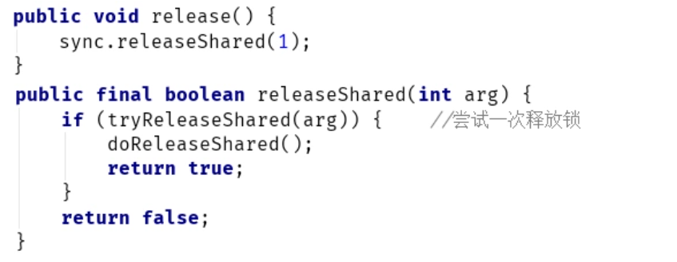
来看下Semaphore是如何实现tryReleaseShared方法的，tryReleaseShared方法是一个自旋操作，直到更新State成功：
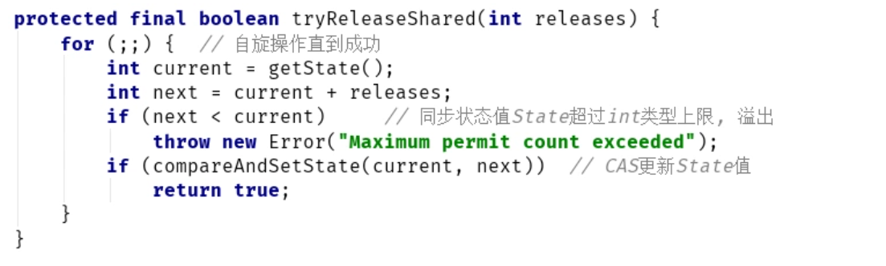
更新完成后，State == 2,ThreadA会进入doReleaseShared方法，先将头结点状态置为0，表示即将唤醒后继结点：
此时，等待队列结构：
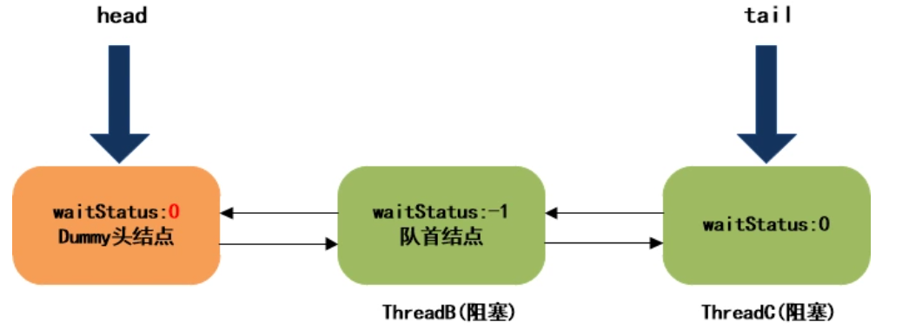
然后调用unparkSuccessor方法唤醒后继结点：
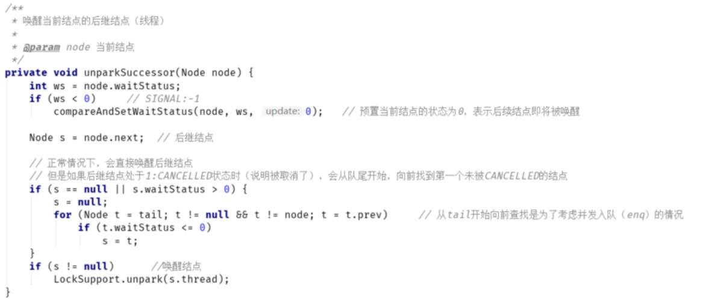
此时，ThreadB被唤醒，会从原阻塞处继续向下执行：
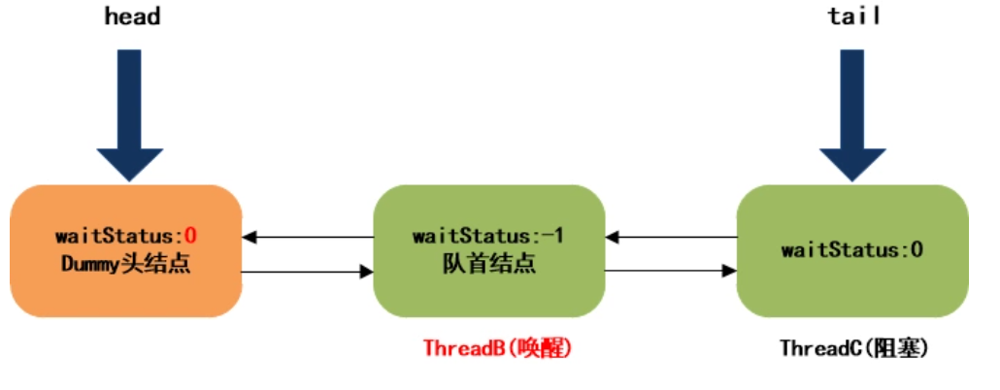
此时，同步状态：State == 2
3.4.6 ThreadB从原阻塞处继续执行
ThreadB被唤醒后，从下面开始继续往下执行，进入下一次自旋：
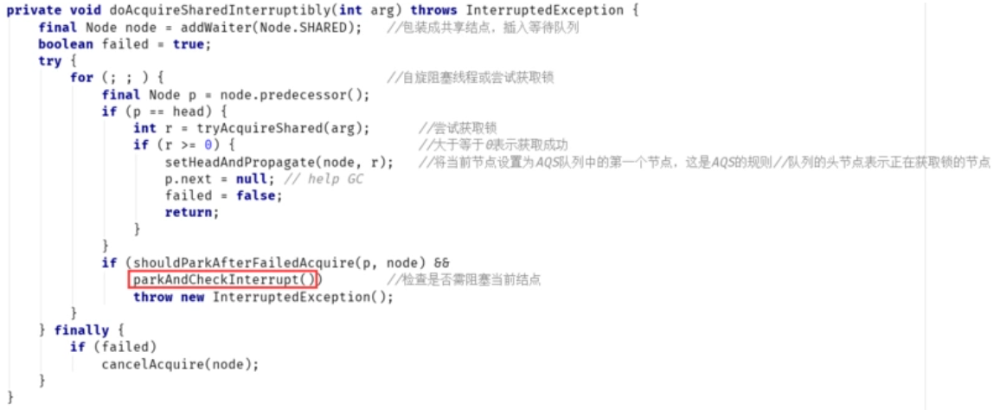
在下一次自旋中，ThreadB调用tryAcquireShared方法成功获取到共享资源（State修改为0），setHeadAndPropagate方法把ThreadB变为头结点，
并根据传播状态判断是否要唤醒并释放后继结点：
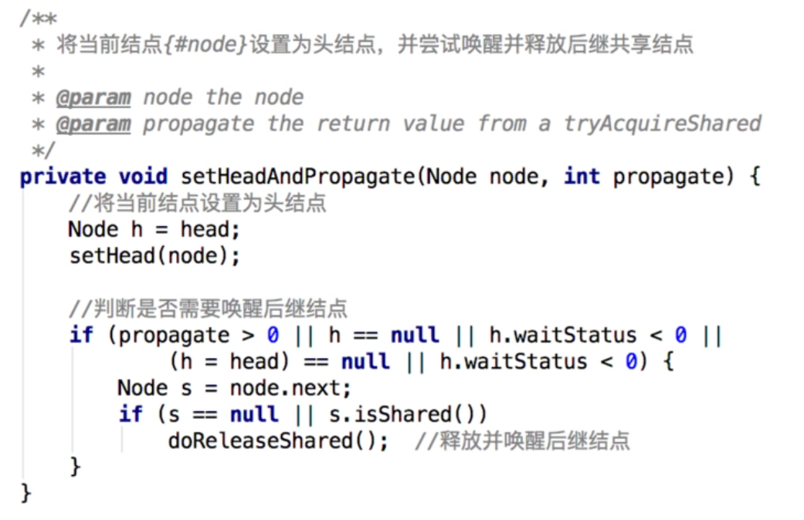
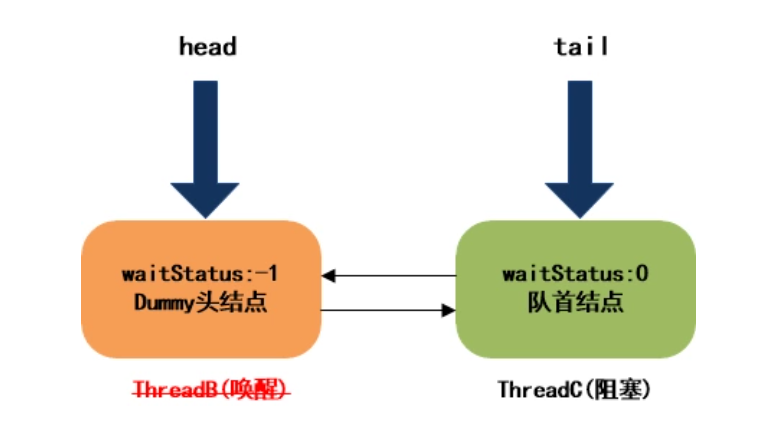
同步状态：State == 0
ThreadB会调用doReleaseShared方法，继续尝试唤醒后继的共享结点（也就是ThreadC），这个过程和ThreadB被唤醒完全一样：
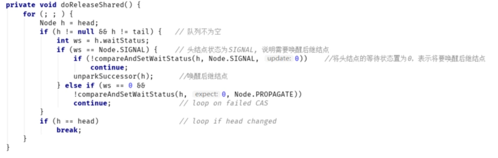
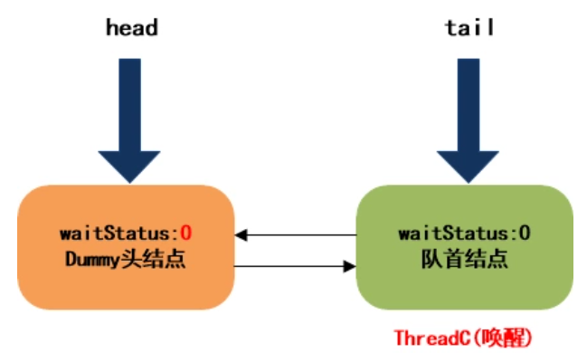
同步状态：State == 0
3.4.7 ThreadC从原阻塞处继续执行
由于目前共享资源仍为0，所以ThreadC被唤醒后，在经过尝试获取资源失败后，又进入了阻塞：
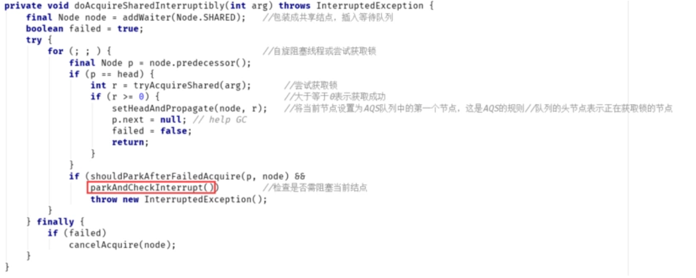
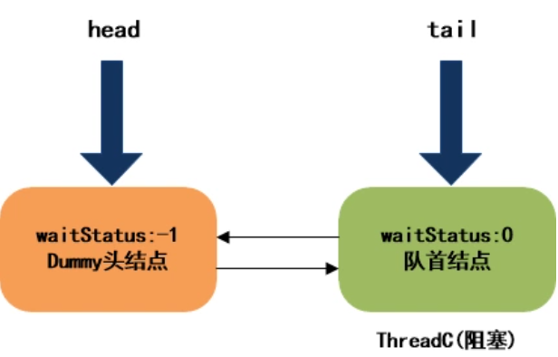
3.4.8 ThreadA调用release(2)方法
内部和无参的release方法一样：
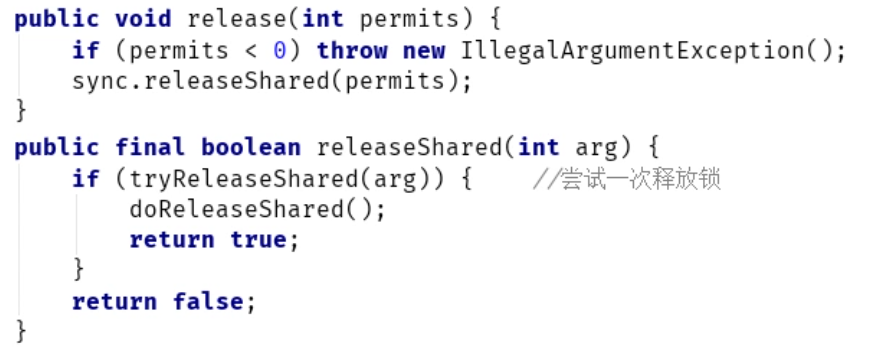
更新完成后，State == 2,ThreadA会进入doReleaseShared方法，唤醒后继结点：
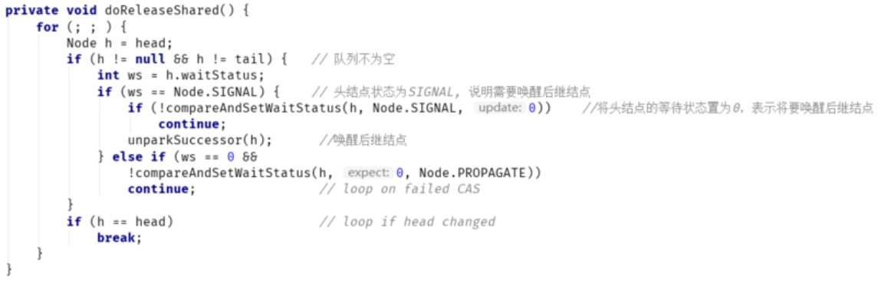
此时，等待队列结构：
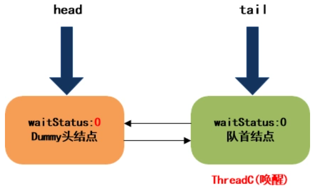
同步状态：State == 2
3.4.9 ThreadC从原阻塞处继续执行
由于目前共享资源为2，所以ThreadC被唤醒后，获取资源成功：
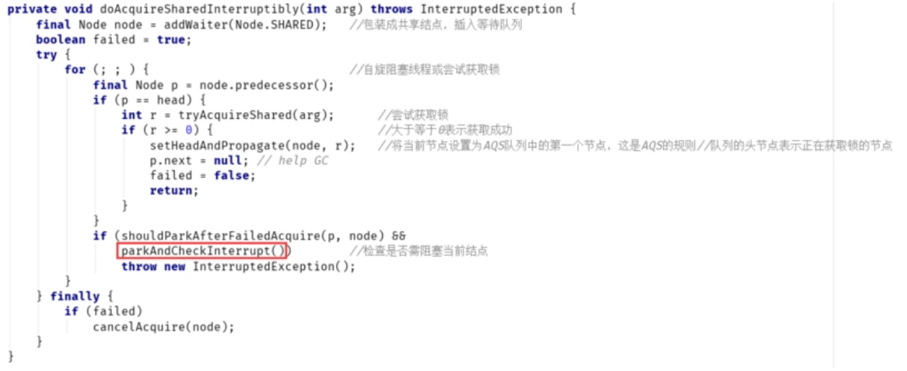
最终同步队列的结构如下：
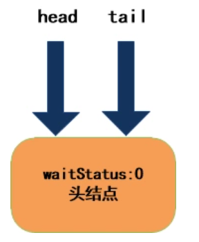
同步状态：State == 0
3.5 总结
Semaphore其实就是实现了AQS共享功能的同步器，对于Semaphore来说，资源就是许可证的数量：
- 剩余许可证数（State值） - 尝试获取的许可数（acquire方法入参） ≥ 0：资源可用
- 剩余许可证数（State值） - 尝试获取的许可数（acquire方法入参） < 0：资源不可用
这里共享的含义是多个线程可以同时获取资源，当计算出的剩余资源不足时，线程就会阻塞。
注意：Semaphore不是锁，只能限制同时访问资源的线程数，至于对数据一致性的控制，Semaphore是不关心的。当前，如果是只有一个许可的Semaphore，可以当作锁使用。
3.5.1 非公平策略
另外，上述我们讨论的是Semaphore的公平策略，非公平策略的差异并不大：
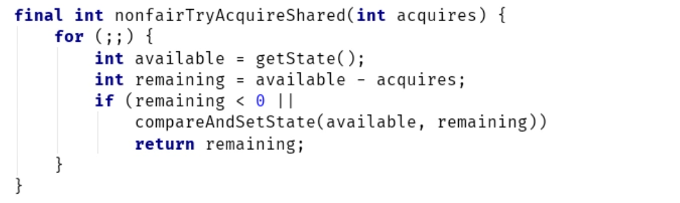
可以看到，非公平策略不会去查看等待队列的队首是否有其它线程正在等待，而是直接尝试修改State值。
3.5.2 其它方法
Semaphore还有两个比较特殊的方法，这两个方法的特点是采用自旋操作State变量，直到成功为止。所以，并不会阻塞调用线程。
reducePermits
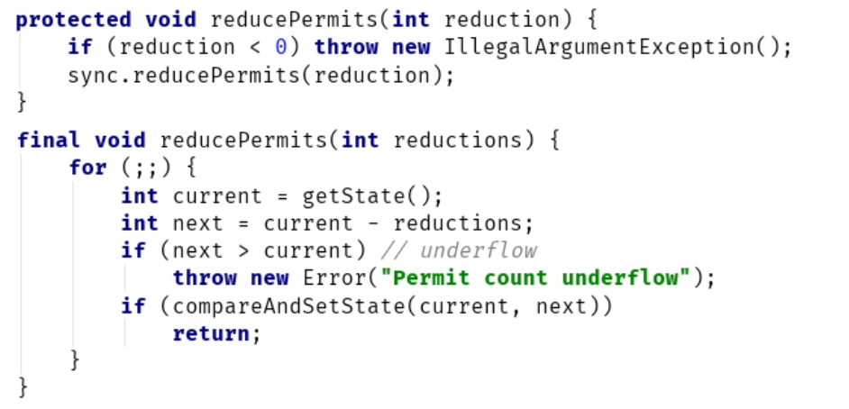
reducePermits立即减少指定数目的可用许可数。
drainPermits
drainPermits方法用于将可用许可数清零，并返回清零前的许可数
3.6 Semaphore的类/接口声明
类声明
构造器
接口声明
四、Exchanger
4.1 简介
Exchanger——交换器，是JDK1.5时引入的一个同步器，从字面上就可以看出，这个类的主要作用是交换数据。
Exchanger有点类似于CyclicBarrier，我们知道CyclicBarrier是一个栅栏，到达栅栏的线程需要等待其它一定数量的线程到达后，才能通过栅栏。
Exchanger可以看成是一个双向栅栏，如下图：
Thread1线程到达栅栏后，会首先观察有没其它线程已经到达栅栏，如果没有就会等待，如果已经有其它线程（Thread2）已经到达了，就会以成对的方式交换各自携带的信息，因此Exchanger非常适合用于两个线程之间的数据交换。
4.2 示例
我们来看一个示例，理解下Exchanger的功能：
示例：假设现在有1个生产者，1个消费者，如果要实现生产者-消费者模式，一般的思路是利用队列作为一个消息队列，生产者不断生产消息，然后入队；消费者不断从消息队列中取消息进行消费。如果队列满了，生产者等待，如果队列空了，消费者等待。
我们来看下如何利用Exchanger实现生产者-消息者模式：
生产者：
public class Producer implements Runnable {
private final Exchanger<Message> exchanger;
public Producer(Exchanger<Message> exchanger) {
this.exchanger = exchanger;
}
@Override
public void run() {
Message message = new Message(null);
for (int i = 0; i < 3; i++) {
try {
Thread.sleep(1000);
message.setV(String.valueOf(i));
System.out.println(Thread.currentThread().getName() + ": 生产了数据[" + i + "]");
message = exchanger.exchange(message);
System.out.println(Thread.currentThread().getName() + ": 交换得到数据[" + String.valueOf(message.getV()) + "]");
} catch (InterruptedException e) {
e.printStackTrace();
}
}
}
}消费者：
public class Consumer implements Runnable {
private final Exchanger<Message> exchanger;
public Consumer(Exchanger<Message> exchanger) {
this.exchanger = exchanger;
}
@Override
public void run() {
Message msg = new Message(null);
while (true) {
try {
Thread.sleep(1000);
msg = exchanger.exchange(msg);
System.out.println(Thread.currentThread().getName() + ": 消费了数据[" + msg.getV() + "]");
msg.setV(null);
} catch (InterruptedException e) {
e.printStackTrace();
}
}
}
}Main：
public class Main {
public static void main(String[] args) {
Exchanger<Message> exchanger = new Exchanger<>();
Thread t1 = new Thread(new Consumer(exchanger), "消费者-t1");
Thread t2 = new Thread(new Producer(exchanger), "生产者-t2");
t1.start();
t2.start();
}
}输出：
生产者-t2: 生产了数据[0]
生产者-t2: 交换得到数据[null]
消费者-t1: 消费了数据[0]
生产者-t2: 生产了数据[1]
消费者-t1: 消费了数据[1]
生产者-t2: 交换得到数据[null]
生产者-t2: 生产了数据[2]
消费者-t1: 消费了数据[2]
生产者-t2: 交换得到数据[null]上述示例中，生产者生产了3个数据：0、1、2。通过Exchanger与消费者进行交换。可以看到，消费者消费完后会将空的Message交换给生产者。
4.3 原理
4.3.1 构造
我们先来看下Exchanger的构造，Exchanger只有一个空构造器：
构造时，内部创建了一个Participant对象，Participant是Exchanger的一个内部类，本质就是一个ThreadLocal，用来保存线程本地变量Node：
我们可以把Node对象理解成每个线程自身携带的交换数据，：
4.3.2 单槽位交换
Exchanger有两种数据交换的方式，当并发量低的时候，内部采用“单槽位交换”；并发量高的时候会采用“多槽位交换”。
我们先来看下exchange方法：
可以看到exchange其实就是一个用于判断数据交换方式的方法，它的内部会根据Exchanger的某些字段状态来判断当前应该采用单槽交换（slotExchange）还是多槽交换（arenaExchange），整个判断的流程图如下：
Exchanger的arena字段是一个Node类型的数组，代表了一个槽数组，只在多槽交换时会用到。此外，Exchanger还有一个slot字段，表示单槽交换结点，只在单槽交换时使用。
slot字段最终会指向首个到达的线程的自身Node结点，表示线程占用了槽位。
单槽交换示意图：
我们来看下Exchanger具体是如何实现单槽交换的，单槽交换方法slotExchange并不复杂，slotExchange的入参item表示当前线程携带的数据，返回值正常情况下为配对线程携带的数据：
/**
* 单槽交换
*
* @param item 待交换的数据
* @return 其它配对线程的数据; 如果多槽交换被激活或被中断返回null, 如果超时返回TIMED_OUT(一个Obejct对象)
*/
private final Object slotExchange(Object item, boolean timed, long ns) {
Node p = participant.get(); // 当前线程携带的交换结点
Thread t = Thread.currentThread();
if (t.isInterrupted()) // 线程的中断状态检查
return null;
for (Node q; ; ) {
if ((q = slot) != null) { // slot != null, 说明已经有线程先到并占用了slot
if (U.compareAndSwapObject(this, SLOT, q, null)) {
Object v = q.item; // 获取交换值
q.match = item; // 设置交换值
Thread w = q.parked;
if (w != null) // 唤醒在此槽位等待的线程
U.unpark(w);
return v; // 交换成功, 返回结果
}
// CPU核数数多于1个, 且bound为0时创建arena数组，并将bound设置为SEQ大小
if (NCPU > 1 && bound == 0 && U.compareAndSwapInt(this, BOUND, 0, SEQ))
arena = new Node[(FULL + 2) << ASHIFT];
} else if (arena != null) // slot == null && arena != null
// 单槽交换中途出现了初始化arena的操作，需要重新直接路由到多槽交换(arenaExchange)
return null;
else { // 当前线程先到, 则占用此slot
p.item = item;
if (U.compareAndSwapObject(this, SLOT, null, p)) // 将slot槽占用
break;
p.item = null; // CAS操作失败, 继续下一次自旋
}
}
// 执行到这, 说明当前线程先到达, 且已经占用了slot槽, 需要等待配对线程到达
int h = p.hash;
long end = timed ? System.nanoTime() + ns : 0L;
int spins = (NCPU > 1) ? SPINS : 1; // 自旋次数, 与CPU核数有关
Object v;
while ((v = p.match) == null) { // p.match == null表示配对的线程还未到达
if (spins > 0) { // 优化操作:自旋过程中随机释放CPU
h ^= h << 1;
h ^= h >>> 3;
h ^= h << 10;
if (h == 0)
h = SPINS | (int) t.getId();
else if (h < 0 && (--spins & ((SPINS >>> 1) - 1)) == 0)
Thread.yield();
} else if (slot != p) // 优化操作:配对线程已经到达, 但是还未完全准备好, 所以需要再自旋等待一会儿
spins = SPINS;
else if (!t.isInterrupted() && arena == null &&
(!timed || (ns = end - System.nanoTime()) > 0L)) { //已经自旋很久了, 还是等不到配对, 此时才阻塞当前线程
U.putObject(t, BLOCKER, this);
p.parked = t;
if (slot == p)
U.park(false, ns); // 阻塞当前线程
p.parked = null;
U.putObject(t, BLOCKER, null);
} else if (U.compareAndSwapObject(this, SLOT, p, null)) { // 超时或其他（取消）, 给其他线程腾出slot
v = timed && ns <= 0L && !t.isInterrupted() ? TIMED_OUT : null;
break;
}
}
U.putOrderedObject(p, MATCH, null);
p.item = null;
p.hash = h;
return v;
}上述代码的整个流程大致如下：
首先到达的线程：
- 如果当前线程是首个到达的线程，会将slot字段指向自身的Node结点，表示槽位被占用；
- 然后，线程会自旋一段时间，如果经过一段时间的自旋还是等不到配对线程到达，就会进入阻塞。（这里之所以不直接阻塞，而是自旋，是出于线程上下文切换开销的考虑，属于一种优化手段）
稍后到达的配对线程：
如果当前线程（配对线程）不是首个到达的线程，则到达时槽（slot）已经被占用，此时slot指向首个到达线程自身的Node结点。配对线程会将slot置空，并取Node中的item作为交换得到的数据返回，另外，配对线程会把自身携带的数据存入Node的match字段中，并唤醒Node.parked所指向的线程（也就是先到达的线程）。
首先到达的线程被唤醒：
线程被唤醒后，由于match不为空（存放了配对线程携带过来的数据），所以会退出自旋，然后将match对应的值返回。
这样，线程A和线程B就实现了数据交换，整个过程都没有用到同步操作。
4.3.2 多槽位交换
Exchanger最复杂的地方就是它的多槽位交换（arenaExchange），我们先看下，什么时候会触发多槽位交换？
我们之前说了，并发量大的时候会触发多槽交换，这个说法并不准确。
单槽交换（slotExchange）中有这样一段代码：
也就是说，如果在单槽交换中，同时出现了多个配对线程竞争修改slot槽位，导致某个线程CAS修改slot失败时，就会初始化arena多槽数组，后续所有的交换都会走arenaExchange：
/**
* 多槽交换
*
* @param item 待交换的数据
* @return 其它配对线程的数据; 如果被中断返回null, 如果超时返回TIMED_OUT(一个Obejct对象)
*/
private final Object arenaExchange(Object item, boolean timed, long ns) {
Node[] a = arena;
Node p = participant.get(); // 当前线程携带的交换结点
for (int i = p.index; ; ) { // 当前线程的arena索引
int b, m, c;
long j;
// 从arena数组中选出偏移地址为(i << ASHIFT) + ABASE的元素, 即真正可用的Node
Node q = (Node) U.getObjectVolatile(a, j = (i << ASHIFT) + ABASE);
if (q != null && U.compareAndSwapObject(a, j, q, null)) { // CASE1: 槽不为空，说明已经有线程到达并在等待了
Object v = q.item; // 获取已经到达的线程所携带的值
q.match = item; // 把当前线程携带的值交换给已经到达的线程
Thread w = q.parked; // q.parked指向已经到达的线程
if (w != null)
U.unpark(w); // 唤醒已经到达的线程
return v;
} else if (i <= (m = (b = bound) & MMASK) && q == null) { // CASE2: 有效槽位位置且槽位为空
p.item = item;
if (U.compareAndSwapObject(a, j, null, p)) { // 占用该槽位, 成功
long end = (timed && m == 0) ? System.nanoTime() + ns : 0L;
Thread t = Thread.currentThread();
for (int h = p.hash, spins = SPINS; ; ) { // 自旋等待一段时间,看看有没其它配对线程到达该槽位
Object v = p.match;
if (v != null) { // 有配对线程到达了该槽位
U.putOrderedObject(p, MATCH, null);
p.item = null;
p.hash = h;
return v; // 返回配对线程交换过来的值
} else if (spins > 0) {
h ^= h << 1;
h ^= h >>> 3;
h ^= h << 10;
if (h == 0) // initialize hash
h = SPINS | (int) t.getId();
else if (h < 0 && // approx 50% true
(--spins & ((SPINS >>> 1) - 1)) == 0)
Thread.yield(); // 每一次等待有两次让出CPU的时机
} else if (U.getObjectVolatile(a, j) != p) // 优化操作:配对线程已经到达, 但是还未完全准备好, 所以需要再自旋等待一会儿
spins = SPINS;
else if (!t.isInterrupted() && m == 0 &&
(!timed || (ns = end - System.nanoTime()) > 0L)) { // 等不到配对线程了, 阻塞当前线程
U.putObject(t, BLOCKER, this);
p.parked = t; // 在结点引用当前线程，以便配对线程到达后唤醒我
if (U.getObjectVolatile(a, j) == p)
U.park(false, ns);
p.parked = null;
U.putObject(t, BLOCKER, null);
} else if (U.getObjectVolatile(a, j) == p &&
U.compareAndSwapObject(a, j, p, null)) { // 尝试缩减arena槽数组的大小
if (m != 0) // try to shrink
U.compareAndSwapInt(this, BOUND, b, b + SEQ - 1);
p.item = null;
p.hash = h;
i = p.index >>>= 1; // descend
if (Thread.interrupted())
return null;
if (timed && m == 0 && ns <= 0L)
return TIMED_OUT;
break; // expired; restart
}
}
} else // 占用槽位失败
p.item = null;
} else { // CASE3: 无效槽位位置, 需要扩容
if (p.bound != b) {
p.bound = b;
p.collides = 0;
i = (i != m || m == 0) ? m : m - 1;
} else if ((c = p.collides) < m || m == FULL ||
!U.compareAndSwapInt(this, BOUND, b, b + SEQ + 1)) {
p.collides = c + 1;
i = (i == 0) ? m : i - 1; // cyclically traverse
} else
i = m + 1; // grow
p.index = i;
}
}
}
/**
* 单槽交换
*
* @param item 待交换的数据
* @return 其它配对线程的数据; 如果多槽交换被激活或被中断返回null, 如果超时返回TIMED_OUT(一个Obejct对象)
*/
private final Object slotExchange(Object item, boolean timed, long ns) {
Node p = participant.get(); // 当前线程携带的交换结点
Thread t = Thread.currentThread();
if (t.isInterrupted()) // 线程的中断状态检查
return null;
for (Node q; ; ) {
if ((q = slot) != null) { // slot != null, 说明已经有线程先到并占用了slot
if (U.compareAndSwapObject(this, SLOT, q, null)) {
Object v = q.item; // 获取交换值
q.match = item; // 设置交换值
Thread w = q.parked;
if (w != null) // 唤醒在此槽位等待的线程
U.unpark(w);
return v; // 交换成功, 返回结果
}
// CPU核数数多于1个, 且bound为0时创建arena数组，并将bound设置为SEQ大小
if (NCPU > 1 && bound == 0 && U.compareAndSwapInt(this, BOUND, 0, SEQ))
arena = new Node[(FULL + 2) << ASHIFT];
} else if (arena != null) // slot == null && arena != null
// 单槽交换中途出现了初始化arena的操作，需要重新直接路由到多槽交换(arenaExchange)
return null;
else { // 当前线程先到, 则占用此slot
p.item = item;
if (U.compareAndSwapObject(this, SLOT, null, p)) // 将slot槽占用
break;
p.item = null; // CAS操作失败, 继续下一次自旋
}
}
// 执行到这, 说明当前线程先到达, 且已经占用了slot槽, 需要等待配对线程到达
int h = p.hash;
long end = timed ? System.nanoTime() + ns : 0L;
int spins = (NCPU > 1) ? SPINS : 1; // 自旋次数, 与CPU核数有关
Object v;
while ((v = p.match) == null) { // p.match == null表示配对的线程还未到达
if (spins > 0) { // 优化操作:自旋过程中随机释放CPU
h ^= h << 1;
h ^= h >>> 3;
h ^= h << 10;
if (h == 0)
h = SPINS | (int) t.getId();
else if (h < 0 && (--spins & ((SPINS >>> 1) - 1)) == 0)
Thread.yield();
} else if (slot != p) // 优化操作:配对线程已经到达, 但是还未完全准备好, 所以需要再自旋等待一会儿
spins = SPINS;
else if (!t.isInterrupted() && arena == null &&
(!timed || (ns = end - System.nanoTime()) > 0L)) { //已经自旋很久了, 还是等不到配对, 此时才阻塞当前线程
U.putObject(t, BLOCKER, this);
p.parked = t;
if (slot == p)
U.park(false, ns); // 阻塞当前线程
p.parked = null;
U.putObject(t, BLOCKER, null);
} else if (U.compareAndSwapObject(this, SLOT, p, null)) { // 超时或其他（取消）, 给其他线程腾出slot
v = timed && ns <= 0L && !t.isInterrupted() ? TIMED_OUT : null;
break;
}
}
U.putOrderedObject(p, MATCH, null);
p.item = null;
p.hash = h;
return v;
}多槽交换方法arenaExchange的整体流程和slotExchange类似，主要区别在于它会根据当前线程的数据携带结点Node中的index字段计算出命中的槽位。
如果槽位被占用，说明已经有线程先到了，之后的处理和slotExchange一样；
如果槽位有效且为null，说明当前线程是先到的，就占用槽位，然后按照：spin->yield->block这种锁升级的顺序进行优化的等待，等不到配对线程就会进入阻塞。
另外，由于arenaExchange利用了槽数组，所以涉及到槽数组的扩容和缩减问题，读者可以自己去研读源码。
其次，在定位arena数组的有效槽位时，需要考虑缓存行的影响。由于高速缓存与内存之间是以缓存行为单位交换数据的，根据局部性原理，相邻地址空间的数据会被加载到高速缓存的同一个数据块上（缓存行），而数组是连续的（逻辑，涉及到虚拟内存）内存地址空间，因此，多个slot会被加载到同一个缓存行上，当一个slot改变时，会导致这个slot所在的缓存行上所有的数据（包括其他的slot）无效，需要从内存重新加载，影响性能。
需要注意的是，由于不同的JDK版本，同步工具类内部的实现细节千差万别，所以最关键的还是理解它的设计思想。Exchanger的设计思想和LongAdder有些类似，都是通过
无锁+分散热点的方式提升性能，但是个人感觉JDK1.8中的Exchanger实现更为复杂，特别是其中的多槽交换，还涉及了缓存行相关的东西。
4.4 类/接口声明
类声明
接口声明
五、Phaser
5.1 简介
Phaser是JDK1.7开始引入的一个同步工具类，适用于一些需要分阶段的任务的处理。它的功能与 CyclicBarrier和CountDownLatch有些类似，类似于一个多阶段的栅栏，并且功能更强大，我们来比较下这三者的功能：
| 同步器 | 作用 |
|---|---|
| CountDownLatch | 倒数计数器，初始时设定计数器值，线程可以在计数器上等待，当计数器值归0后，所有等待的线程继续执行 |
| CyclicBarrier | 循环栅栏，初始时设定参与线程数，当线程到达栅栏后，会等待其它线程的到达，当到达栅栏的总数满足指定数后，所有等待的线程继续执行 |
| Phaser | 多阶段栅栏，可以在初始时设定参与线程数，也可以中途注册/注销参与者，当到达的参与者数量满足栅栏设定的数量后，会进行阶段升级（advance） |
Phaser中有一些比较重要的概念，理解了这些概念才能理解Phaser的功能。
5.1.1 phase(阶段)
我们知道，在CyclicBarrier中，只有一个栅栏，线程在到达栅栏后会等待其它线程的到达。
Phaser也有栅栏，在Phaser中，栅栏的名称叫做phase(阶段)，在任意时间点，Phaser只处于某一个phase(阶段)，初始阶段为0，最大达到Integerr.MAX_VALUE，然后再次归零。当所有parties参与者都到达后，phase值会递增。
如果看过之前CyclicBarrier，就会知道，Phaser中的phase(阶段)这个概念其实和CyclicBarrier中的Generation很相似，只不过Generation没有计数。
5.1.2 parties(参与者)
parties(参与者)其实就是CyclicBarrier中的参与线程的概念。
CyclicBarrier中的参与者在初始构造指定后就不能变更，而Phaser既可以在初始构造时指定参与者的数量，也可以中途通过register、bulkRegister、arriveAndDeregister等方法注册/注销参与者。
5.1.3 arrive(到达) / advance(进阶)
Phaser注册完parties（参与者）之后，参与者的初始状态是unarrived的，当参与者到达（arrive）当前阶段（phase）后，状态就会变成arrived。当阶段的到达参与者数满足条件后（注册的数量等于到达的数量），阶段就会发生进阶（advance）——也就是phase值+1。
5.1.4 Termination（终止）
代表当前Phaser对象达到终止状态，有点类似于CyclicBarrier中的栅栏被破坏的概念。
5.1.5 Tiering（分层）
Phaser支持分层（Tiering） —— 一种树形结构，通过构造函数可以指定当前待构造的Phaser对象的父结点。之所以引入Tiering，是因为当一个Phaser有大量参与者（parties）的时候，内部的同步操作会使性能急剧下降，而分层可以降低竞争，从而减小因同步导致的额外开销。
在一个分层Phasers的树结构中，注册和撤销子Phaser或父Phaser是自动被管理的。当一个Phaser的参与者（parties）数量变成0时，如果有该Phaser有父结点，就会将它从父结点中溢移除。
关于Phaser的分层，后续我们在讲Phaser原理时会进一步讨论。
5.2 示例
为了更好的理解Phaser的功能，我们来看几个示例：
5.2.1 示例一
通过Phaser控制多个线程的执行时机：有时候我们希望所有线程到达指定点后再同时开始执行，我们可以利用CyclicBarrier或CountDownLatch来实现，这里给出使用Phaser的版本。
public class PhaserTest1 {
public static void main(String[] args) {
Phaser phaser = new Phaser();
for (int i = 0; i < 10; i++) {
phaser.register(); // 注册各个参与者线程
new Thread(new Task(phaser), "Thread-" + i).start();
}
}
}
class Task implements Runnable {
private final Phaser phaser;
Task(Phaser phaser) {
this.phaser = phaser;
}
@Override
public void run() {
int i = phaser.arriveAndAwaitAdvance(); // 等待其它参与者线程到达
// do something
System.out.println(Thread.currentThread().getName() + ": 执行完任务，当前phase =" + i + "");
}
}输出：
Thread-8: 执行完任务，当前phase =1
Thread-4: 执行完任务，当前phase =1
Thread-3: 执行完任务，当前phase =1
Thread-0: 执行完任务，当前phase =1
Thread-5: 执行完任务，当前phase =1
Thread-6: 执行完任务，当前phase =1
Thread-7: 执行完任务，当前phase =1
Thread-9: 执行完任务，当前phase =1
Thread-1: 执行完任务，当前phase =1
Thread-2: 执行完任务，当前phase =1以上示例中，创建了10个线程，并通过register方法注册Phaser的参与者数量为10。当某个线程调用arriveAndAwaitAdvance方法后，arrive数量会加1，如果数量没有满足总数（参与者数量10），当前线程就是一直等待，当最后一个线程到达后，所有线程都会继续往下执行。
注意：
arriveAndAwaitAdvance方法是不响应中断的，也就是说即使当前线程被中断，arriveAndAwaitAdvance方法也不会返回或抛出异常，而是继续等待。如果希望能够响应中断，可以参考awaitAdvanceInterruptibly方法。
5.2.2 示例二
通过Phaser实现开关。在以前讲CountDownLatch时，我们给出过以CountDownLatch实现开关的示例，也就是说，我们希望一些外部条件得到满足后，然后打开开关，线程才能继续执行，我们看下如何用Phaser来实现此功能。
public class PhaserTest2 {
public static void main(String[] args) throws IOException {
Phaser phaser = new Phaser(1); // 注册主线程,当外部条件满足时,由主线程打开开关
for (int i = 0; i < 10; i++) {
phaser.register(); // 注册各个参与者线程
new Thread(new Task2(phaser), "Thread-" + i).start();
}
// 外部条件:等待用户输入命令
System.out.println("Press ENTER to continue");
BufferedReader reader = new BufferedReader(new InputStreamReader(System.in));
reader.readLine();
// 打开开关
phaser.arriveAndDeregister();
System.out.println("主线程打开了开关");
}
}
class Task2 implements Runnable {
private final Phaser phaser;
Task2(Phaser phaser) {
this.phaser = phaser;
}
@Override
public void run() {
int i = phaser.arriveAndAwaitAdvance(); // 等待其它参与者线程到达
// do something
System.out.println(Thread.currentThread().getName() + ": 执行完任务，当前phase =" + i + "");
}
}输出：
主线程打开了开关
Thread-7: 执行完任务，当前phase =1
Thread-4: 执行完任务，当前phase =1
Thread-3: 执行完任务，当前phase =1
Thread-1: 执行完任务，当前phase =1
Thread-0: 执行完任务，当前phase =1
Thread-9: 执行完任务，当前phase =1
Thread-8: 执行完任务，当前phase =1
Thread-2: 执行完任务，当前phase =1
Thread-5: 执行完任务，当前phase =1
Thread-6: 执行完任务，当前phase =1以上示例中，只有当用户按下回车之后，任务才真正开始执行。这里主线程Main相当于一个协调者，用来控制开关打开的时机，arriveAndDeregister方法不会阻塞，该方法会将到达数加1，同时减少一个参与者数量，最终返回线程到达时的phase值。
5.2.3 示例三
通过Phaser控制任务的执行轮数
public class PhaserTest3 {
public static void main(String[] args) throws IOException {
int repeats = 3; // 指定任务最多执行的次数
Phaser phaser = new Phaser() {
@Override
protected boolean onAdvance(int phase, int registeredParties) {
System.out.println("---------------PHASE[" + phase + "],Parties[" + registeredParties + "] ---------------");
return phase + 1 >= repeats || registeredParties == 0;
}
};
for (int i = 0; i < 10; i++) {
phaser.register(); // 注册各个参与者线程
new Thread(new Task3(phaser), "Thread-" + i).start();
}
}
}
class Task3 implements Runnable {
private final Phaser phaser;
Task3(Phaser phaser) {
this.phaser = phaser;
}
@Override
public void run() {
while (!phaser.isTerminated()) { //只要Phaser没有终止, 各个线程的任务就会一直执行
int i = phaser.arriveAndAwaitAdvance(); // 等待其它参与者线程到达
// do something
System.out.println(Thread.currentThread().getName() + ": 执行完任务");
}
}
}输出：
---------------PHASE[0],Parties[5] ---------------
Thread-4: 执行完任务
Thread-1: 执行完任务
Thread-2: 执行完任务
Thread-3: 执行完任务
Thread-0: 执行完任务
---------------PHASE[1],Parties[5] ---------------
Thread-0: 执行完任务
Thread-3: 执行完任务
Thread-1: 执行完任务
Thread-4: 执行完任务
Thread-2: 执行完任务
---------------PHASE[2],Parties[5] ---------------
Thread-2: 执行完任务
Thread-4: 执行完任务
Thread-1: 执行完任务
Thread-0: 执行完任务
Thread-3: 执行完任务以上示例中，我们在创建Phaser对象时，覆写了onAdvance方法，这个方法类似于CyclicBarrier中的barrierAction任务。
也就是说，当最后一个参与者到达时，会触发onAdvance方法，入参phase表示到达时的phase值，registeredParties表示到达时的参与者数量，返回true表示需要终止Phaser。
我们通过phase + 1 >= repeats ，来控制阶段（phase）数的上限为2（从0开始计），最终控制了每个线程的执行任务次数为repeats次。
5.2.4 示例四
Phaser支持分层功能，我们先来考虑下如何用利用Phaser的分层来实现高并发时的优化，在示例三中，我们其实创建了10个任务，然后10个线程共用一个Phaser对象，如下图：
如果任务数继续增大，那么同步产生的开销会非常大，利用Phaser分层的功能，我们可以限定每个Phaser对象的最大使用线程（任务数），如下图：
可以看到，上述Phasers其实构成了一颗多叉树，如果任务数继续增多，还可以将Phaser的叶子结点继续分裂，然后将分裂出的子结点供工作线程使用。
public class PhaserTest4 {
private static final int TASKS_PER_PHASER = 4; // 每个Phaser对象对应的工作线程（任务）数
public static void main(String[] args) throws IOException {
int repeats = 3; // 指定任务最多执行的次数
Phaser phaser = new Phaser() {
@Override
protected boolean onAdvance(int phase, int registeredParties) {
System.out.println("---------------PHASE[" + phase + "],Parties[" + registeredParties + "] ---------------");
return phase + 1 >= repeats || registeredParties == 0;
}
};
Tasker[] taskers = new Tasker[10];
build(taskers, 0, taskers.length, phaser); // 根据任务数,为每个任务分配Phaser对象
for (int i = 0; i < taskers.length; i++) { // 执行任务
Thread thread = new Thread(taskers[i]);
thread.start();
}
}
private static void build(Tasker[] taskers, int lo, int hi, Phaser phaser) {
if (hi - lo > TASKS_PER_PHASER) {
for (int i = lo; i < hi; i += TASKS_PER_PHASER) {
int j = Math.min(i + TASKS_PER_PHASER, hi);
build(taskers, i, j, new Phaser(phaser));
}
} else {
for (int i = lo; i < hi; ++i)
taskers[i] = new Tasker(i, phaser);
}
}
}
class Task4 implements Runnable {
private final Phaser phaser;
Task4(Phaser phaser) {
this.phaser = phaser;
this.phaser.register();
}
@Override
public void run() {
while (!phaser.isTerminated()) { //只要Phaser没有终止, 各个线程的任务就会一直执行
int i = phaser.arriveAndAwaitAdvance(); // 等待其它参与者线程到达
// do something
System.out.println(Thread.currentThread().getName() + ": 执行完任务");
}
}
}
输出：
---------------PHASE[0],Parties[3] ---------------
Thread-9: 执行完任务
Thread-6: 执行完任务
Thread-5: 执行完任务
Thread-4: 执行完任务
Thread-1: 执行完任务
Thread-0: 执行完任务
Thread-7: 执行完任务
Thread-8: 执行完任务
Thread-2: 执行完任务
Thread-3: 执行完任务
---------------PHASE[1],Parties[3] ---------------
Thread-3: 执行完任务
Thread-7: 执行完任务
Thread-0: 执行完任务
Thread-1: 执行完任务
Thread-5: 执行完任务
Thread-8: 执行完任务
Thread-2: 执行完任务
Thread-9: 执行完任务
Thread-6: 执行完任务
Thread-4: 执行完任务
---------------PHASE[2],Parties[3] ---------------
Thread-4: 执行完任务
Thread-2: 执行完任务
Thread-8: 执行完任务
Thread-0: 执行完任务
Thread-3: 执行完任务
Thread-9: 执行完任务
Thread-6: 执行完任务
Thread-7: 执行完任务
Thread-1: 执行完任务
Thread-5: 执行完任务5.3 原理
Phaser是本系列至今为止，内部结构最为复杂的同步器之一。在开始深入Phaser原理之前，我们有必要先来讲讲Phaser的内部组织结构和它的设计思想。
5.3.1 内部结构
之前我们说过，Phaser支持树形结构，在之前示例四中，也给出了一个通过分层提高并发性和程序执行效率的例子。一个复杂分层结构的Phaser树的内部结构如下图所示：
上面图中的几点关键点：
- 树的根结点root链接着两个“无锁栈”——Treiber Stack，用于保存等待线程（比如当线程等待Phaser进入下一阶段时，会根据当前阶段的奇偶性，把自己挂到某个栈中），所有Phaser对象都共享这两个栈。
- 当首次将某个Phaser结点链接到树中时，会同时向该结点的父结点注册一个参与者。
为什么需要向父结点注册参与者？
首先我们要明白对于Phaser来说，什么时候会发生跃迁（advance）进入下一阶段？
废话，当然是等它所有参与者都到达的时候。那么它所等待的参与者都包含那几类呢？
①对于一个孤立的Phaser结点（也可以看成是只有一个根结点的树）
其等待的参与者，就是显式注册的参与者，这也是最常见的情况。
比如下图，如果有10个Task共用这个Phaser，那等待的参与者数就是10，当10个线程都到达后，Phaser就会跃迁至下一阶段。
②对于一个非孤立的Phaser叶子结点，比如下图中标绿的叶子结点
这种情况和①一样，子Phaser1和子Phaser2等待的参与者数是4，子Phaser3等待的参与者数是2。
③对于一个非孤立非叶子的Phaser结点，比如上图中标蓝色的结点
这是最特殊的一种情况，这也是Phaser同步器关于分层的主要设计思路。
这种情况，结点所等待的参与者数目包含两部分：
- 直接显式注册的参与者（通过构造器或register方法）。——等于0
- 子结点的数目。——等于3
也就是说在上图中，当左一的子Phaser1的4个参与者都到达后，它会通知父结点Phaser，自己的状态已经OK了，这时Phaser会认为子Phaser1已经准备就绪，会将自己的到达者数量加1，同理，当子Phaser2和子Phaser3的所有参与者分别到达后，它们也会依次通知Phaser，只有当Phaser（根结点）的到达者数量为3时，才会释放“无锁栈”中等待着的线程，并将阶段数phase增加1。
这是一种层层递归的设计，只要当根结点的所有参与者都到达后（也就是到达参数者数等于其子结点数），所有等待线程才会放行，栅栏才会进入下一阶段。
了解了上面这些，我们再来看Phaser的源码。
5.3.2 同步状态定义
Phaser使用一个long类型来保存同步状态值State，并按位划分不同区域的含义，通过掩码和位运算进行赋值和操作：
5.3.3 栈结点定义
“无锁栈”——Treiber Stack，保存在Phaser树的根结点中，其余所有Phaser子结点共享这两个栈：
结点的定义非常简单，内部保存了线程信息和Phsaer对象信息：
注意：ForkJoinPool.ManagedBlocker是当栈包含ForkJoinWorkerThread类型的QNode阻塞的时候，ForkJoinPool内部会增加一个工作线程来保证并行度，后续讲ForkJoin框架时我们会进行分析。
5.3.4 构造器
Phaser一共有4个构造器，可以看到，最终其实都是调用了Phaser(Phaser parent, int parties)这个构造器。
Phaser(Phaser parent, int parties)的内部实现如下，关键就是给当前的Phaser对象指定父结点时，如果当前Phaser的参与者不为0，需要向父Phaser注册一个参与者（代表当前结点本身）：
5.3.5 注册参与者
Phaser提供了两个注册参与者的方法：
- register：注册单个参与者
- bulkRegister：批量注册参与者
这两个方法都很简单，内部调用了doRegister方法：
/**
* 注册指定数目{#registrations}的参与者
*/
private int doRegister(int registrations) {
// 首先计算注冊后当前State要调整的值adjust
long adjust = ((long) registrations << PARTIES_SHIFT) | registrations;
final Phaser parent = this.parent;
int phase;
for (; ; ) {
long s = (parent == null) ? state : reconcileState(); // reconcileState()调整当前Phaser的State与root一致
int counts = (int) s;
int parties = counts >>> PARTIES_SHIFT; // 参与者数目
int unarrived = counts & UNARRIVED_MASK; // 未到达的数目
if (registrations > MAX_PARTIES - parties)
throw new IllegalStateException(badRegister(s));
phase = (int) (s >>> PHASE_SHIFT); // 当前Phaser所处的阶段phase
if (phase < 0)
break;
if (counts != EMPTY) { // CASE1: 当前Phaser已经注册过参与者
if (parent == null || reconcileState() == s) {
if (unarrived == 0) // 参与者已全部到达栅栏, 当前Phaser正在Advance, 需要阻塞等待这一过程完成
root.internalAwaitAdvance(phase, null);
else if (UNSAFE.compareAndSwapLong(this, stateOffset, s, s + adjust)) // 否则,直接更新State
break;
}
} else if (parent == null) { // CASE2: 当前Phaser未注册过参与者（第一次注册）,且没有父结点
long next = ((long) phase << PHASE_SHIFT) | adjust;
if (UNSAFE.compareAndSwapLong(this, stateOffset, s, next)) // CAS更新当前Phaser的State值
break;
} else { // CASE3: 当前Phaser未注册过参与者（第一次注册）,且有父结点
synchronized (this) {
if (state == s) {
phase = parent.doRegister(1); // 向父结点注册一个参与者
if (phase < 0)
break;
while (!UNSAFE.compareAndSwapLong(this, stateOffset, s,
((long) phase << PHASE_SHIFT) | adjust)) {
s = state;
phase = (int) (root.state >>> PHASE_SHIFT);
}
break;
}
}
}
}
return phase;
}doRegister方法用来给当前Phaser对象注册参与者，主要有三个分支：
①当前Phaser已经注册过参与者
如果参与者已经全部到达栅栏，则当前线程需要阻塞等待（因为此时phase正在变化，增加1到下一个phase），否则直接更新State。
②当前Phaser未注册过参与者（第一次注册），且没有父结点
这种情况最简单，直接更新当前Phaser的State值。
③当前Phaser未注册过参与者（第一次注册），且有父结点
说明当前Phaser是新加入的叶子结点，需要向父结点注册自身，同时更新自身的State值。
注意: reconcileState方法比较特殊，因为当出现树形结构时，根结点首先进行phase的更新，所以需要显式同步，使当前结点和根结点保持一致。
另外，阻塞等待调用的是internalAwaitAdvance方法，其实就是根据当前阶段phase，将线程包装成结点加入到root结点所指向的某个“无锁栈”中：
/**
* internalAwaitAdvance的主要逻辑就是：当前参与者线程等待Phaser进入下一个阶段(就是phase值变化).
* @return 返回新的阶段
*/
private int internalAwaitAdvance(int phase, QNode node) {
// assert root == this;
releaseWaiters(phase - 1); // 清空不用的Treiber Stack（奇偶Stack交替使用）
boolean queued = false; // 入队标识
int lastUnarrived = 0;
int spins = SPINS_PER_ARRIVAL;
long s;
int p;
while ((p = (int) ((s = state) >>> PHASE_SHIFT)) == phase) {
if (node == null) { // spinning in noninterruptible mode
int unarrived = (int) s & UNARRIVED_MASK;
if (unarrived != lastUnarrived &&
(lastUnarrived = unarrived) < NCPU)
spins += SPINS_PER_ARRIVAL;
boolean interrupted = Thread.interrupted();
if (interrupted || --spins < 0) { // need node to record intr
node = new QNode(this, phase, false, false, 0L);
node.wasInterrupted = interrupted;
}
} else if (node.isReleasable()) // done or aborted
break;
else if (!queued) { // 将结点压入栈顶
AtomicReference<QNode> head = (phase & 1) == 0 ? evenQ : oddQ;
QNode q = node.next = head.get();
if ((q == null || q.phase == phase) &&
(int) (state >>> PHASE_SHIFT) == phase) // avoid stale enq
queued = head.compareAndSet(q, node);
} else {
try {
// 阻塞等待
ForkJoinPool.managedBlock(node);
} catch (InterruptedException ie) {
node.wasInterrupted = true;
}
}
}
if (node != null) {
if (node.thread != null)
node.thread = null; // avoid need for unpark()
if (node.wasInterrupted && !node.interruptible)
Thread.currentThread().interrupt();
if (p == phase && (p = (int) (state >>> PHASE_SHIFT)) == phase)
return abortWait(phase); // possibly clean up on abort
}
releaseWaiters(phase);
return p;
}5.3.6 参与者到达并等待
arriveAndAwaitAdvance的主要逻辑如下：
首先将同步状态值State中的未到达参与者数量减1，然后判断未到达参与者数量是否为0?
如果不为0，则阻塞当前线程，以等待其他参与者到来；
如果为0，说明当前线程是最后一个参与者，如果有父结点则对父结点递归调用该方法。（因为只有根结点的未到达参与者数目为0时），才会进阶phase。
5.4 类/接口声明
类声明
构造器声明
接口声明